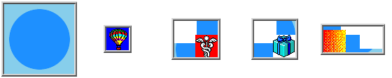

- Index
 ImageMagick Examples Preface and Index
ImageMagick Examples Preface and Index
- Known and Fixed Bugs Index
The GIF animation operators of IM has been problem area for users for a very
long time. I know I have been wrestling with them since version 4. The
following details the long time problems that existed at the time I myself
fixed the bugs, and expanded the GIF animation operators, available.
Sometimes you just have to fix things yourself. :-)
This page is for reference for older IM users who may still have to deal with
this bug. The examples on this page have not been re-created when/if the bug
was fixed.
Coalesce Bugs -- Fixed IM v6.2.6-1
IM has in general always work fine for animations that only overlays images
onto the results of the last image output. These animations are typically
fully opaque (no transparent pixels) and are generated using either a
"
-dispose" setting of
'
Undefined' or '
None'.
However for the other two forms of animation "
-dispose" methods, '
Background' and '
Previous', the "
-coalesce" function did not work
properly to generate the correct look of the animation at each frame.
The major problem with these methods was that pixels in the next frame
generated could be cleared back to a transparent color, something that just
overlaying the next frame will not achieve. The reslt was that the colesced
animation did not have the same look as the original animation.
For example here is a '
Background' disposal animation, which had the worse results for
"
-coalesce" bugs.
convert -dispose none -delay 0 \
-size 100x100 xc:skyblue \
-fill dodgerblue -draw 'circle 50,50 15,25' \
-dispose background -delay 100 \
-page +5+10 balloon.gif \
-page +35+30 medical.gif \
-page +62+50 present.gif \
-page +10+55 shading.gif \
-loop 0 canvas_bgnd.gif
| |
|
Which for IM version 6.2.2 produced the following "
-coalesce" result.
convert canvas_bgnd.gif -coalesce canvas_bgnd_coalesce_old.gif
montage canvas_bgnd_coalesce_old.gif -tile x1 -geometry '+2+2' \
-background none -bordercolor none canvas_bgnd_coal_old_frames.gif
| |
|
As you can see the results was incorrect, with the background being cleared
to the background color. In fact any animations involving transparency has
problems such as this.
However from IM version 6.2.6-1, "
-coalesce" now produces the correct frames, and sets the disposal
methods for the coalesced frames so that the animated form also works exactly
like the original animation.
convert canvas_bgnd.gif -coalesce canvas_bgnd_coalesce.gif
montage canvas_bgnd_coalesce.gif -tile x1 -geometry '+2+2' \
-background none -bordercolor none canvas_bgnd_coal_frames.gif
| |
|
It has taken a very long incremental testing to reach this point.
Getting the appropriate '
Background' disposal effects,
and setting the "
-dispose" method for the new coalesced animation is not a simple
matter.
All these "
-coalesce"
problems were fixed in version 6.2.6-1.
Deconstruct Bug - Replacement operator IM v6.2.6-3
Finding any "
-deconstruct" problems is difficult unless "
-coalesce" doing the right job.
However "
-deconstruct"
original purpose was to find the differences from one frame to another, and
this is can be done without any need to look at or understand GIF animation
"
-dispose" methods.
For example, given the above montage of a correctly coalesced '
Background' disposal
animation...
The "
-deconstruct"
operator will generate the following frames...
convert canvas_bgnd_coalesce.gif -deconstruct canvas_bgnd_deconst.gif
convert canvas_bgnd_deconst.gif -bordercolor none -frame 4x4+2+2 miff:- |\
montage miff:- -tile x1 -geometry '+2+2' \
-background none -bordercolor none canvas_bgnd_dec_frames.gif
|

The actual frame images generated by "
-deconstruct" is correct, as
they do show the rectangular area that has changed in the animation.
And in fact using "
-deconstruct" on animations which only overlay the changes from
one frame to the next will work fine for a disposal method of '
None'.
However as you can see from the animation of 'Deconstructed' images that were
generated (see right), they do
not work correctly in a GIF animation.
This problem will never be corrected!
This problem was fixed in IM v6.2.6-3, by providing a new "
-layers OptimizeFrame" method, that not
only deconstructs the image but trys to find the best "
-dispose" method to frame
optimize the animation correctly.
![[IM Output]](canvas_bgnd_coal_old_frames.gif)
![[IM Output]](canvas_bgnd_coal_frames.gif)
{kind=link}
{kind=link}
{kind=link}
{kind=link}
{kind=link}